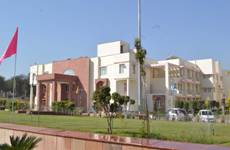

Department of Library and Information Science
The Department of Library and Information Science (DLIS) is one of the newly established departments of the University, which was introduced in the academic year 2014-15. It currently offers an M. Lib. I. Sc. program in the discipline. This Department is functioning under the School of Computer Science and Informatics, which is the oldest and the founding School of the University. The Department currently offers Master of Library & Information Sc. with Intake Capacity of 20 seats. The M. Lib. I. Sc. program offered by the Department is of two years duration, divided into four semesters, and based on the Choice Based Credit System (CBCS).
To develop manpower capable of managing Information Institutions such as Libraries, Information system and Information Centers with modern technology applications